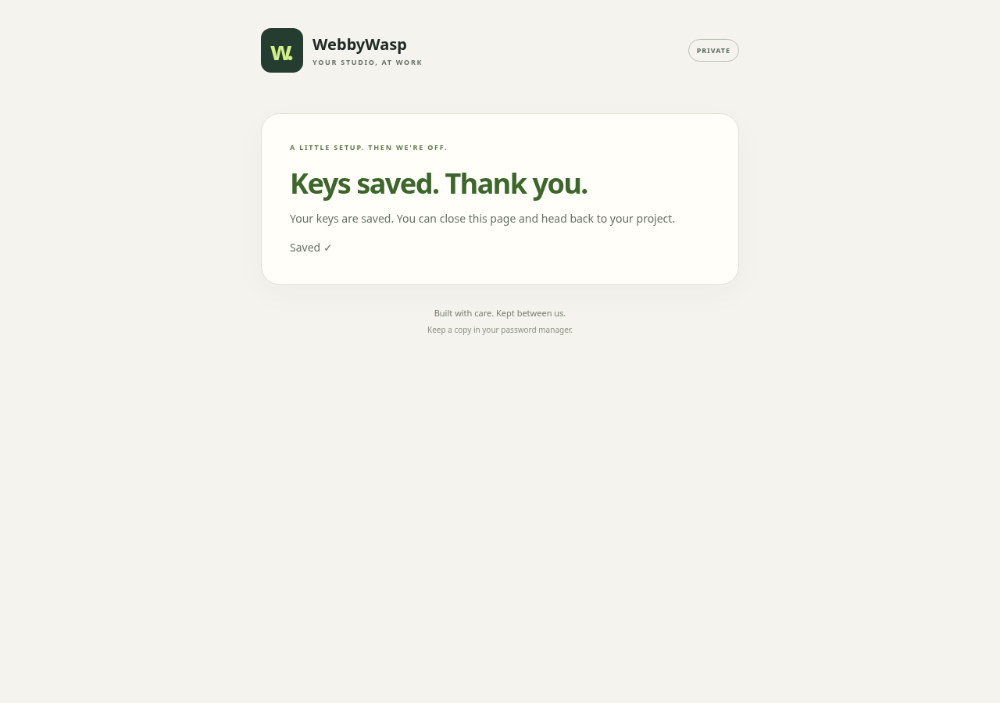

BACKROOM · BUILT ON SWITCH
A client talks in Discord. Agents plan, build, independently review and deploy a full-stack app on NixOS.
Open the live sample app · Read the code and run the proof

Run bash demo.sh for real Switch refusals, exact-commit deployment, revision, lesson promotion and outage recovery.
The live sample uses a fictional client and labelled sample actions. The real-account journey remains to be recorded. The account-free proof uses scripted roles and a disposable demo fixture.